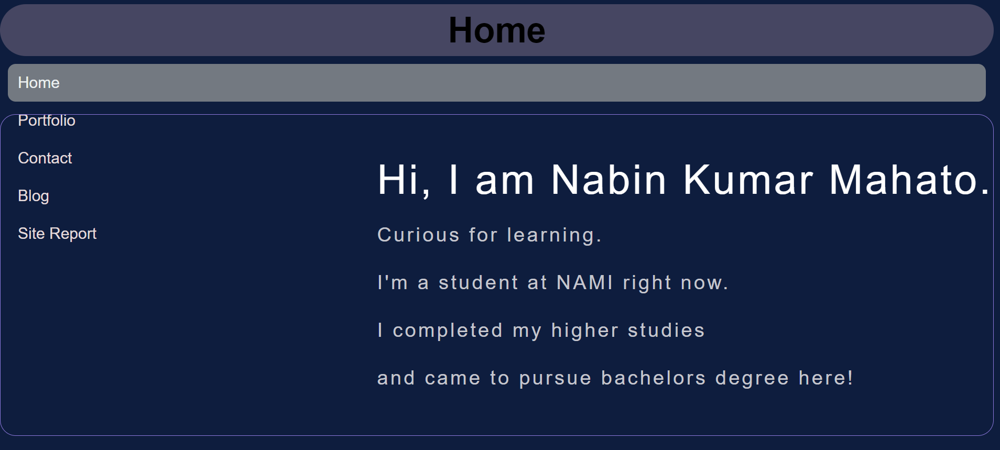
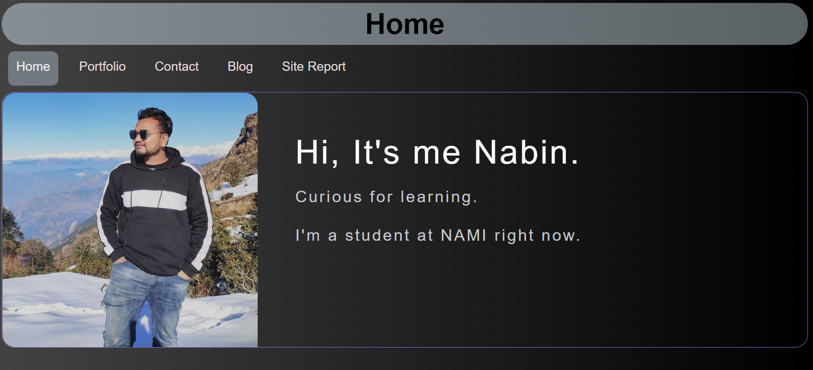
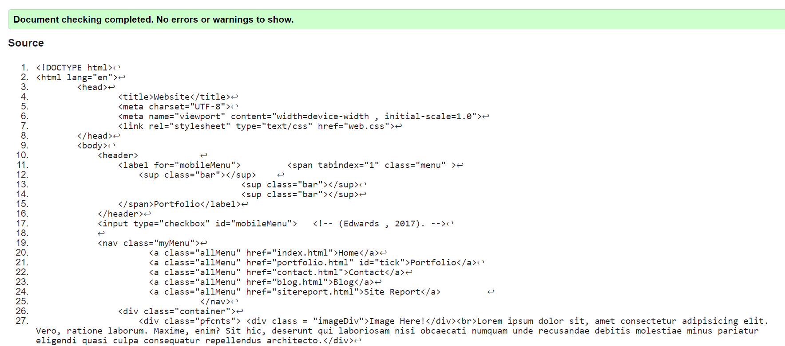
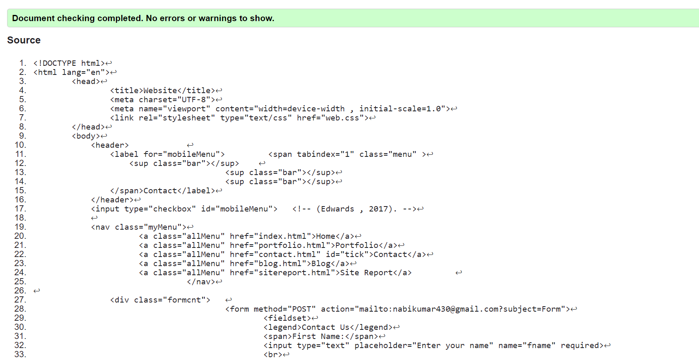
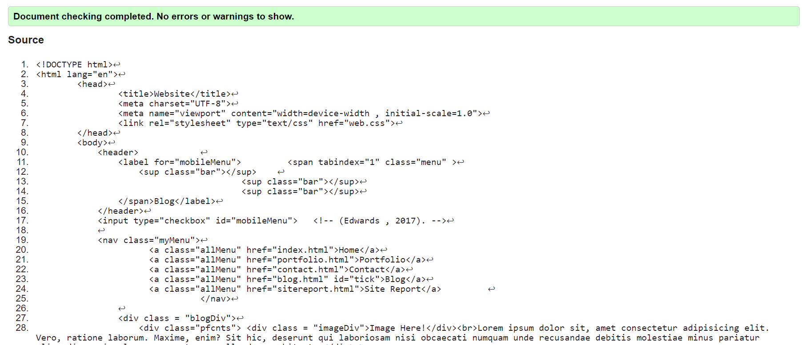
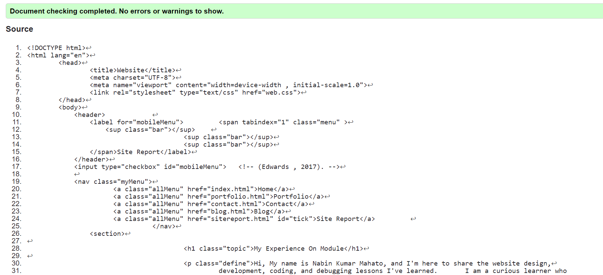
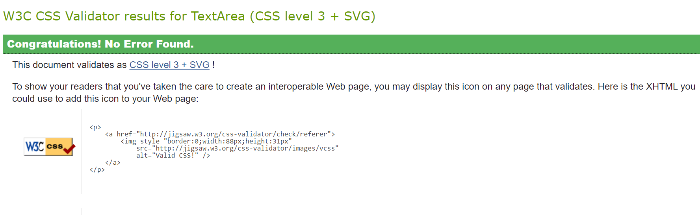

Hi, My name is Nabin Kumar Mahato, and I'm here to share the website design, development, coding, and debugging lessons I've learned. I am a curious learner who enjoys discovering new things. I have a strong interest in studying different non-human languages. Knowing NAMI College offered BSc. Computing courses and that the instructors were quite approachable, I just recently enrolled. We learned the fundamentals of HTML and CSS from our module instructor Mr. Ankit Sir, and we are now competent of creating websites. He also showed us how to store the codes for later use by pushing them to github. Using CSS to design and create a user-friendly website was an easy process thanks to our tutor's straightforward, risk-free instruction.
Reflective Discussion essentially encourages students to declare and reflect on what they have heard or learned. The best learning experience I've ever had in my life has been learning web development, as this module promotes and teaches us to create a variety of websites and webpages. It motivates us to design user-friendly, responsive websites that look good on both tiny and large displays. To provide a great user interface, the website needs to be responsive across all devices. I also improved my ability to efficiently find and fix errors. Never before has learning been so efficient and simple. I gained a lot of knowledge in a short amount of time.
I tried multiple times to improve the site's design and appearance, but each time I failed, so I gave up and decided to redesign the entire website.
25 July, 2022
The picture up top represents the first project I created for term 1. I made all of the changes because the UI was severely flawed because the site was not user-friendly. Therefore, I rebuilt the website using the grid display as it was not responsive also and created it as seen in the below image:
2 Aug, 2022
The finished product of the webpage is the image up above. The website has a nice User Interface (UI), which is straightforward and responsive. Users can see that the general website layout is the same on every page. The website's navigation menu is compatible with every page. The website is responsive, which means that it functions properly on various screen sizes. Only on mobile phones does the navigation menu hide behind the hamburger icon. To make the website's background look hip and distinctive, I used a gradient color that is the same on all of the pages. Almost every section, including the theme and subtopics, is written in sans-serif type. There is a navigation menu underneath the main heading. The general website layout is the same for each and every page. Each page is accessible to users via a navigation menu. Additionally, the website's navigation menu is the same on every page. To avoid being accused of academic dishonesty, I correctly cited and refd the sources when I used certain logos, such as the Facebook, Gmail, and Address logos.
Homepage is validated according to W3C Validator
Portfolio page is validated according to W3C Validator
Contact page is validated according to W3C Validator
Blog page is validated according to W3C Validator
Site Report page is validated according to W3C Validator
CSS is validated according to W3C Validator
[Anon.] (2020) Kernel IT[online]. Available from:https://kernel.sr/914de662ac57138cda4a401ff37b444e/ [Accessed 1 Aug 2022].
It is used in contact page to notify my facebook account.
Edwards, C. (2017) Responsive Menu With Media Queries (Checkbox Trick) - Using Only CSS3. YouTube[online]. Available from: https://youtube.com/watch?v=xMTs8tAapnQ/ [Accessed 27 July 2022]
It was taken from YouTube for making the hamburger icon function in responsive point of view.
[Anon.] [n.d] LOGOS-WORLD[online]. Available from https://logos-world.net/imageup/Gmail/Gmail_(10).png [Accessed 1 Aug 2022]
The gmail logo is used in contact page to let other know my gmail id.
[Anon.] [n.d] dreamstime[online]. Available from: https://www.dreamstime.com/stock-illustration-pin-location-house-home-icon-logo-design-element-can-be-used-as-as-complement-to-image95678746 [Accessed 1 Aug 2022]
It is used in contact page as an image.